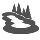

We have options to fit your lifestyle, capability and desires........
Gain some knowledge while cruising the city streets, get off the beaten path and discover some of southern Poland's natural beauty, or hit the trails and head for the mountains and see Krakow from above!
CITY TOUR

• Tour the City •
Our city bike tour is a great introduction to the city of Krakow. The goal of this tour is to get your bearings to better enjoy the rest of your stay. Let us show you how wonderful the city is in a concise and fun manner. Included is a stop for lunch at a traditional Polish and Jewish restaurant

4-4.5 hrs
paved

12 km

beginner
5/5
20 m
COUNTRY TOUR

• Tour the Countryside •
Take a break from the hustle and bustle of the city center and head for the countryside. This ride along the Vistula River will get your heart pumping.
4 hrs
paved / dirt
27 km
intermediate
4/5
120 m
MOUNTAIN TOUR

• Tour the Mountains •
If you want to get off of the pavement there are numerous options in and around Kraków for the mountain biker in you.
4-5 hrs

dirt / trail
25 - 27 km
experienced
3/5
200-400 m
ROAD RACE

• Race the Roads •
For the keen cyclists who wants to break a sweat while winding up and down through the many valleys surrounding Krakow.
3.5 hrs
paved
45 km
intermediate
2/5
120 m